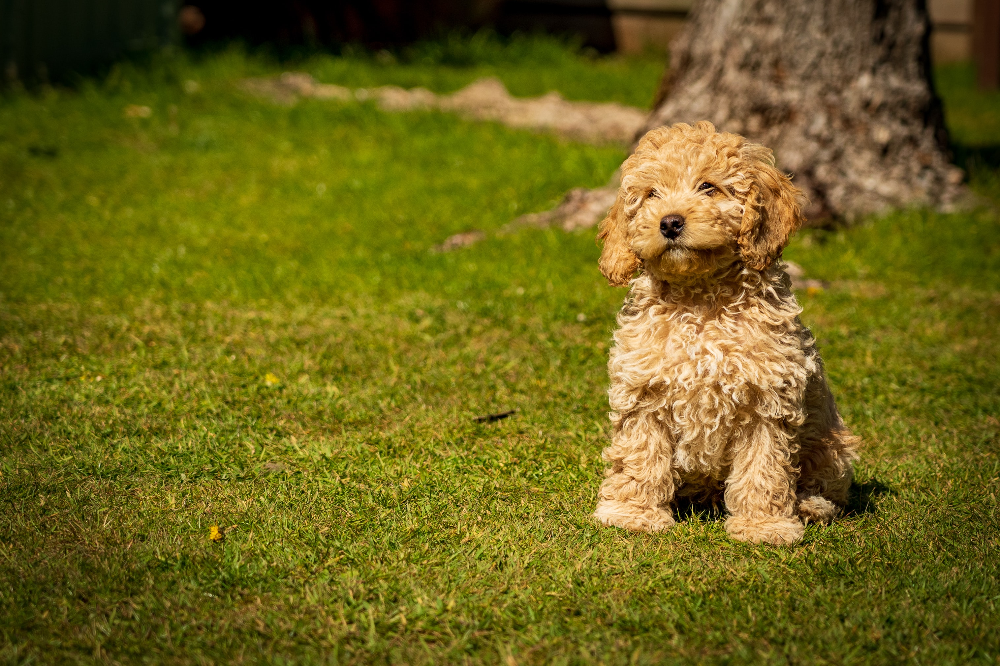

The Poodle, called the Pudel in German and the Caniche in French, is a breed of water dog. The breed is divided into four varieties based on size, the Standard Poodle, Medium Poodle, Miniature Poodle and Toy Poodle, although the Medium Poodle variety is not universally recognised.
